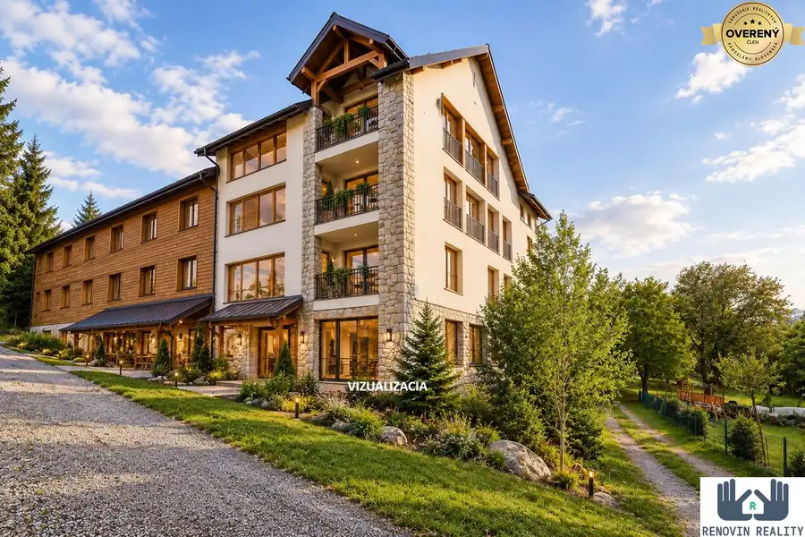
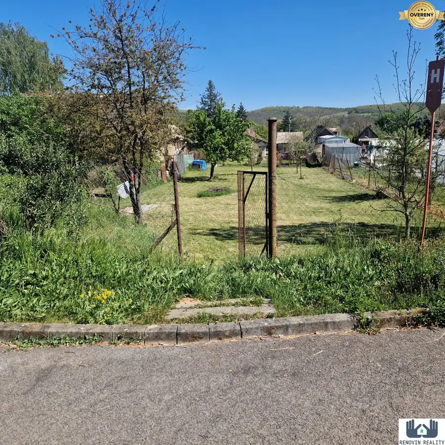
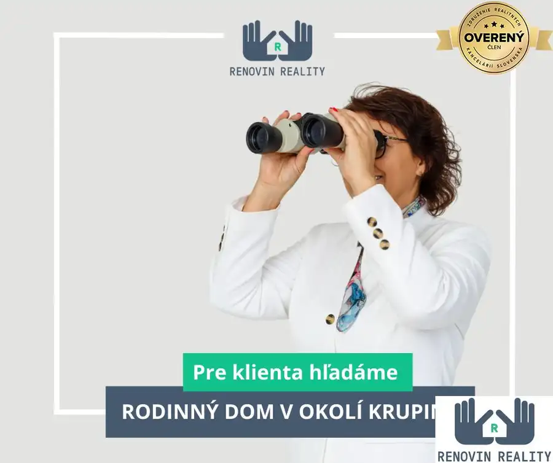

Rodinný Dom, Červená Hora, Krupina
Krupina
- Dispozícia3-izbový
- Plocha59 m²
- Stavpôvodný
O nehnuteľnosti
Len na skok od mesta ale zároveň v prírode, kde sa cesty strácajú v tichu a vzduch vonia po lúkach, čaká svojich nových obyvateľov kamenný dom v pôvodnom stave. Tu nájdete pokoj, priestor a slobodu, ktorú dnešný svet len zriedka ponúka.
Dom ponúka dostatok priestoru na víkendové úniky z mesta alebo aj trvalé bývanie pre tých, ktorí túžia po skutočnom pokoji.
Rodinný dom:
- jednoduchej a praktickej dispozície: obývacia izba – 21 m² kuchyňa – 15 m² kúpeľňa + chodba – 7,5 m² spálňa – 15 m². Celková podlahová plocha: 59 m²
- postavený z kameňa, ktorý ponúkajú príjemný chládok v lete a zároveň udržiava teplo v zime, čím zaručujú komfortné bývanie počas celého roka.
Technické informácie
- kamenná stavba so stabilnými základmi
- suchý dom, bez známok vlhkosti
- napojený na vodovod, elektrinu a žumpu
- vykurovanie nie je vyriešené – čaká na vás, či si zvolíte komfortné podlahové kúrenie alebo klasické vykurovanie pevným palivom s atmosférou
- možnosť modernizácie podľa vlastných predstáv
Lokalita:
Dom sa nachádza v čati Červená Hora pri Krupine, v pokojnom a zelenom prostredí s minimálnou premávkou.
Len 3 km odtiaľ je mesto Krupina, kde nájdete kompletnú občiansku vybavenosť – obchody, školy, zdravotné služby, banky a ďalšie služby pre každodenný život. Lokalita poskytuje pokoj vidieka, no zároveň rýchly a pohodlný prístup do mesta.
Predstavte si rána s kávou v záhrade, kde kvitne levanduľa, letné večery pod hviezdami, alebo malé hospodárstvo veď prečo nie? Tu je všetko len o vašej fantázii – a tá nemá hranice. Tento kamenný dom na konci sveta pri Krupine čaká práve na vás.
Parametre
| Rozloha pozemku | 1493 m² |
|---|---|
| Zastavaná plocha | 59 m² |
| Úžitková plocha | 59 m² |
| Počet izieb | 3 |
| Stav | pôvodný |
| Odvoz odpadu | áno |
| Voda | verejný vodovod |
| El. napätie | 230V |
| Plyn | nie |
| Kanalizácia | žumpa |
| Internet | nie |
| Kúpeľňa | áno |
| Vykurovanie | nie |
| Pivnica | nie |
| Inžinierske siete | áno |
| Postavené z | iné |
| Zariadenie | nezariadený |
| Zateplený objekt | nie |
| Strecha | pôvodná |
| Káblová televízia | nie |
| Predzáhradka | áno |
| Okná | iné |
| Terén | rovina |
| Prístupová cesta | asfaltová cesta |
| Dátum zverejnenia | 24. 10. 2025 |
Kde to je
Mohlo by Vás zaujímať

Hotely a penzióny10 399 900 €Investičná priležitosť rekreačný areál Biele vody, Hriňová Hriňová 37-izbový581 m² Renovin Reality ponúka na predaj rekreačné stredisko Biele Vody v Hriňovej – rozsiahly areál v prírodnom prostredí s existujúcou ubytovacou,…
Pozemok4 25 000 €Na predaj – stavebný pozemok v obci Terany pri Dudinciach Terany 659 m² Pozemok s výmerou 659 m² sa nachádza v tichej uličke, ktorá poskytuje súkromie, harmóniu a bezpečné prostredie pre rodinné bývanie. Je ideálny na…
Rodinné domy 300 000 €Hľadáme dom pre nášho klienta – Krupina a okolie Krupina Ak vlastníte nehnuteľnosť, ktorá spĺňa tieto kritériá, neváhajte nás kontaktovať. Požiadavky klienta: • novostavba • 4-izbový rodinný dom •…